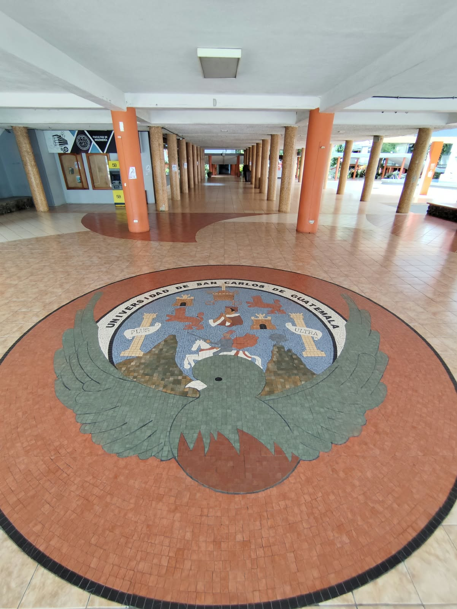

TE INVITO A MI ACTO DE GRADUACIÓN
Ing. Alexander Mejía
Una meta más.
Un sueño cumplido.
Auditorio Francisco Vela

2026</>

Donde empezó el camino.FALTA POCO PARA CELEBRAR
Valió la pena
cada desvelo.
Los proyectos, los parciales y las noches sin dormir me trajeron hasta aquí. Gracias a quienes estuvieron en el camino. Este logro también lleva un poquito de ustedes.
feat: un sueño cumplido
DÓNDE
Auditorio Francisco Vela
Campus Central, zona 12.
Cerca del edificio T3.
- Estudiantes: identificación de estudiante.
- Si no eres estudiante: DPI e indica que vas a la graduación.
También puedes mostrar esta invitación. Lleva siempre tu identificación; el listado estará en la entrada.
UN VISTAZO AL LUGAR
Nos vemos aquí.
El campus, sus rincones y el auditorio.
Toca una foto para verla completa.
Gracias por
acompañarme.
Confirma tu asistencia con tu nombre, correo y CUI para incluirte en el listado de ingreso.
Qué alegría
compartirlo contigo.
No pudimos cargar el registro. Revisa tu conexión e intenta otra vez.
RESPUESTA GUARDADA
¡Estás en la lista!
Tu invitación en PDF
La invitación de la Facultad, con tu nombre y el de Ing. Alexander Mejía. Guárdala para el día del acto.
Descargar mi invitación PDFCOMPARTE TUS RECUERDOS
Este camino merece
sus recuerdos.
Los recuerdos de estos años y los de mi graduación, juntos en un solo lugar. Comparte tus fotos y videos conmigo.
Subir un recuerdoConfirma y entra al álbum.
Confirma tu asistencia para compartir y ver los recuerdos de todos. Si ya confirmaste, entra con tu enlace privado.
Elige tus fotos o videos, o usa la cámara.
Fotos de hasta 8 MB · Videos de hasta 50 MB
Para una mejor calidad de video: grábalo con la cámara de tu teléfono y luego súbelo con «Elegir fotos o videos». Elige la calidad desde tu cámara antes de grabar. Máximo 50 MB por video.
Todos los invitados confirmados podrán ver lo que subas. Una vez compartido, no podrás editarlo ni borrarlo. Hasta 50 archivos por invitado.
El organizador ha pausado la visualización de fotos y videos. Puedes seguir subiendo tus recuerdos con los botones de arriba.
Esta historia la escribimos entre todos.
Comparte la primera foto o el primer video de nuestro gran día.
ESTE LOGRO TAMBIÉN ES DE USTEDES
Gracias por ser parte
de este sueño cumplido.
Con cariño, Alexander.
if (sueño && constancia) {
return "Ingeniero";
}Gracias por ser parte de mi código fuente.